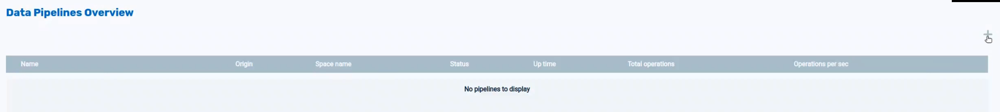

To begin the process of creating a Data Pipeline, click on the Data Pipelines icon in Ops Manager, and then click on the + icon:

The Add Data Pipeline screen will display:
Enter the required data, as shown below, and click on Validate Connection.
Upon entering valid data, the Data Pipelines Overview screen will appear:
Click anywhere on the line describing the Data Pipeline, and detailed configuration information will display, with three tabs: View configuration, Tables, and Start.
The View configuration tab appears as follows:

The Tables tab shows the list of tables in the Data Pipeline, which is initially empty:
Click on Add new table to add a table to the Data Pipeline:
The table name will appear in the list of tables.
Click on the table name to see detailed information about the table:
The Start tab shows the following options: